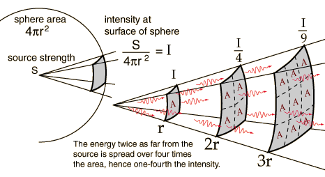

Inverse Square Law, LightAs one of the fields which obey the general inverse square law, the light from a point source can be put in the form where E is called illuminance and I is called pointance. The source is described by a general "source strength" S because there are many ways to characterize a light source - by power in watts, power in the visible range, power factored by the eye's sensitivity, etc. For any such description of the source, if you have determined the amount of light per unit area reaching 1 meter, then it will be one fourth as much at 2 meters. The fact that light from a point source obeys the inverse square law is used to advantage in measuring astronomical distances. If you have a source of known intrinsic brightness, then it can be used to measure its distance from the Earth by the "standard candle" approach.
|
Index Photometry concepts Vision concepts | |||||
|
Go Back |